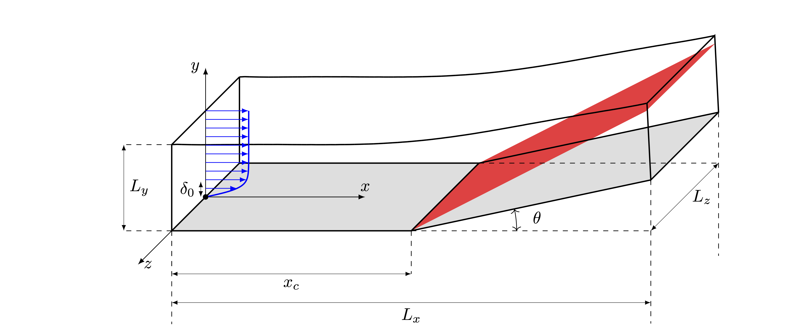

STREAmS – Curvilinear flow cases
STREAmS has been extended to carry out DNS of compressible flow over curvilinear geometries, including the following:
compressible curved channel flow,
external compressible flow on C-meshes (e.g. flow over an airfoil),
spatially developing boundary layer on curved walls (e.g. flow over compression corners).
Governing equations in generalized curvilinear coordinates
The Cartesian coordinates (\(x_i\)) of a body-fitted grid are transformed into boundary-conforming curvilinear coordinates (\(\xi_j\)) through the mapping \(x_i(\xi_j)\), with \(i, j = 1, 2, 3\). Thus, the boundary surface is composed of segments of coordinate surfaces \(\xi_j = const\). Assuming a stationary grid and using the same reference quantities for non-dimensionalization as those defined in the Cartesian coordinates, the compressible Navier–Stokes equations in generalized curvilinear coordinates for a calorically or thermally perfect, heat-conducting gas read:
where \(u_i\) is velocity component in the \(i^{\mathrm{th}}\) Cartesian direction, \(\hat{u}_j=u_i \hat{J}_{j i}\) the velocity component in the \(j^{\mathrm{th}}\) curvilinear direction, with \(\hat{J}_{j i}=J_{j i}/J\) being the Jacobian matrix of the coordinate transformation \(x_i(\xi_j)\), normalized by its determinant \(J\). The constitutive equations defining the viscous stress tensor and heat flux vector are identical as those expressed Cartesian coordinates.
In the most general case, the elements of the Jacobian matrix, \(J_{j i}=\partial \xi_j / \partial x_i\), of the coordinate transformation \(\xi_j(x_i)\), are obtained by inverting the Jacobian matrix of the inverse transformation \(x_i(\xi_j)\). That is:
For the particular cases available in STREAmS, only two-dimensional curvilinear coordinates are considered, where
It must be noted that it is still possible to stretch the mesh in the spanwise direction. Arbitrary two-dimensional conformal/non-conformal grids can be handled by the solver. To understand how to write an 2D mesh file please go to the mesh section in the documentation. A description of the specific setup adopted for the various flow cases, for which a tutorial is present, is reported in the following.
Compressible curved channel flow

The computational domain is bounded by sectors of concentric cylinders, as shown in the figure, and wall curvature is defined by the radius of curvature, \(r_c\), measured at the channel centreline. The height of the computational domain is equal to \(2\,h^*\), where \(h^*\) thus indicates the half-height of the channel. The curvilinear coordinate system is aligned such that \(\xi=\theta\) is the azimuthal (streamwise) direction, \(\eta=r\) is the radial (wall-normal) direction, and \(\zeta=z\) is the axial (spanwise) direction. The velocity components along the streamwise, wall-normal and spanwise directions are denoted by \(\tilde{u},\,\tilde{v},\,\tilde{w}\), respectively. The flow is driven by an azimuthal mean-pressure gradient, \((\partial P/\partial \theta)/r\).
Bulk quantites are indicated with \(B\) subscript and are defined as:
bulk density
bulk velocity
bulk temperature
where \(V^*\) is the volume of the computational domain, \(\rho^*\) is the density, \(\tilde{u}^*\) is the streamwise velocity, and \(T^*\) is the temperature.
Since wall curvature breaks the symmetry of the mean velocity profile, the wall friction changes when evaluated at the inner or outer wall. A global friction velocity can be defined based on the mean-pressure gradient. Inner, outer and global friction velocities are defined as:
where \(U\) is the average of \(\tilde{u}\) over time and the two homogeneous directions, and the subscripts \(i\) and \(o\) denote the inner and outer wall, respectively.
Relevant non-dimensional parameters for the compressible channel flow case are:
friction Reynolds number
bulk Reynolds number based on the bulk temperature
bulk Reynolds number based on the wall temperature
bulk Mach number based on the bulk temperature
bulk Mach number based on the wall temperature
non-dimensional temperature
where \(u^*_{\tau,g}\) is the global friction velocity, \(\nu^*_w\) is the kinematic viscosity at the wall, \(\mu^*(T^*)\) is the dynamic viscosity at temperature \(T^*\), \(T^*_w\) is the wall temperature, \(\gamma = C^*_p/C^*_v\) is the heat capacity ratio, and \(T^*_r\) is the recovery temperature, defined as
\(r = Pr^{1/3}\) being the recovery factor.
For channel flow computations, the primary reference quantities are:
\(R^*\) |
\(\rho^*_R\) |
\(T^*_R\) |
\(L^*_R\) |
|---|---|---|---|
\(R^*\) |
\(\rho_B^*\) |
\(T_w^*\) |
\(h^*\) |
The other reference quantities are derived as explained in the previous section. Note that, as a consequence of this choice, the non-dimensional bulk velocity is not equal to one, but rather:
Furthermore, the non dimensional viscosity at the reference temperature is:
Simulations of the compressible plane channel flow are carried out imposing a constant flow rate, implying that both the bulk density and velocity are constant in time. Furthermore, the wall temperature is constant during the simulation.
For what concerns the bulk temperature, STREAmS can run channel flow simulations according to two possible options (see input section):
– Freely-evolving bulk temperature. This classic setup, see [2] and [9], corresponds to the case of a channel where the bulk temperature continuously increases up to the achievement of balance between aerodynamic heating and wall heat transfer. In this case, the user must supply the code with the desired values of \(M_B^w\) and \(Re_B^w\) in the input file.
– Fixed bulk temperature. In this case, see [10], the bulk temperature is kept constant in time thanks to the use of a bulk cooling term added to the total energy equation. The user must supply the code with the desired values of \(M_B\), \(Re_B\), and \(\Theta\) in the input file.
Concerning curvilinear flow cases, this is the curbed channel is the only one in which the computational grid is directly generated by STREAmS. An estimate of the friction Reynolds number must be specified in the input file to impose a suitable value of near-wall grid spacing in the radial direction.
External compressible flow on C-meshes - Airfoil

The new version of STREAmS allows the user to perform simulations of a compressible flow over an airfoil wing. The computational grid, as sketched in the figure, must have a C-topology, and can be generated using the open-source code Construct2D [14] starting from the airfoil geometry. The two-dimensional grid in the x-y plane, with radius \(R\), is then extruded in the z direction.
Relevant non-dimensional parameters for the airfoil flow are:
free-stream Reynolds number
free-stream Mach number
non-dimensional temperature
Eckert number
where \(c^*\) is the airfoil chord length, \(\nu^*\) is the kinematic viscosity, \(T^*_r\) is the recovery temperature and the subscript \(\infty\) indicates that quantities are referred to free-stream conditions.
For airfoil flow computations, the primary reference quantities are:
\(R^*\) |
\(\rho^*_R\) |
\(T^*_R\) |
\(L^*_R\) |
|---|---|---|---|
\(R^*\) |
\(\rho_\infty^*\) |
\(T_\infty^*\) |
\(c^*\) |
The other reference quantities are derived as explained in the first section. Note that, as a consequence of this choice, the non-dimensional free-stream velocity is not equal to one, but rather:
Furthermore, the non dimensional viscosity at the reference temperature is:
Spatially developing boundary layer on curved walls - Compression corner SBLI
{kind=link}
Simulations of the shock wave/boundary layer interaction on a compression corner can also be simulated. Similarly to the airfoil flow case, the required input is a two-dimensional grid, which consists of a flat plate followed by a corner where the compression ramp begins with a certain deflection angle. The grid in the x-y plane is then extruded in the third dimension.
An inviscid representation of the shock system is sketched in the figure, where \(x_c\) is the corner location. The flow deflection angle (\(\theta\)) is defined by the ramp geometry, and the angle of the oblique shock (\(\beta\)) in the inviscid limit is given by the Theta-Beta-Mach analytic relation.
Relevant non-dimensional parameters for the compressible boundary layer over a compression ramp are:
friction Reynolds number
Reynolds number based on the boundary layer thickness and the free-stream viscosity
Reynolds number based on the momentum thickness and the wall viscosity
Reynolds number based on the momentum thickness and the free-stream viscosity
free-stream Mach number
non-dimensional temperature
Eckert number
where \(u_\tau^*\) is the friction velocity, \(\delta_0^*\) is the boundary layer thickness (based on 99% of the free-stream velocity) at the inflow, \(\theta_0^*\) is the boundary layer momentum thickness at the inflow, \(\nu_w^*\) and \(\mu^*_w\) are the kinematic and dynamic viscosity at the wall respectively, \(T^*_r\) is the recovery temperature and the subscript \(\infty\) indicates that quantities are referred to free-stream conditions.
The primary reference quantities are:
\(R^*\) |
\(\rho^*_R\) |
\(T^*_R\) |
\(L^*_R\) |
|---|---|---|---|
\(R^*\) |
\(\rho_\infty^*\) |
\(T_\infty^*\) |
\(\delta_0^*\) |
The other reference quantities are derived as explained in the first section. Note that, as a consequence of this choice, the non-dimensional free-stream velocity is not equal to one, but rather:
Furthermore, the non dimensional viscosity at the reference temperature is: